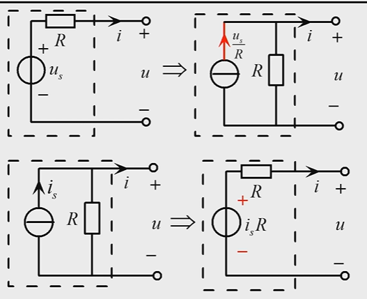
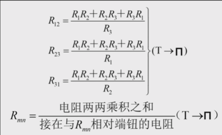
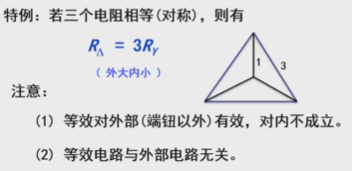
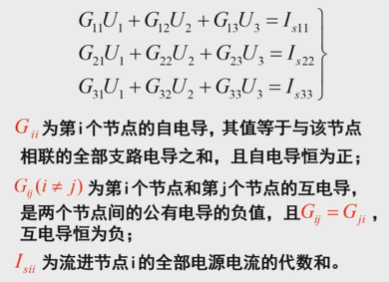
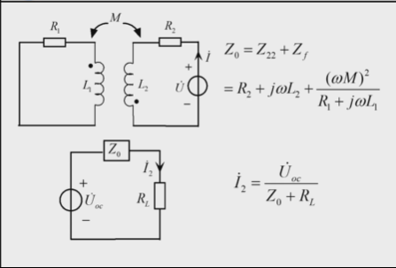

从入门到进门
第一章 电路模型和电路定律
第一章总结
- 研究的电路都满足集总假设条件，默认电路都是集总电路
- 激励称为输入，响应称为输出
- 关联参考方向：电流与压降方向一致，非关联参考方向：电流与压降方向相反
- 支路，节点，回路，网孔，网络
- KCL，KVL
- 电阻有负电阻
- 受控电压源（?CVS），受控电流源（?CCS）
第二章 直流电阻电路的等效变换分析
第二章总结
电流源并联时叠加，串联时要求两个电流源相等且就是这两个电流源大小，电压源串联时叠加，并联要求电压源相等
单口网络等效变换

Y-Δ变换



网孔分析法 ：每个网孔各设一个电流，利用回路中总电压代数和为 $0$ 列方程，方程左右两边满足
压升 = 压降，注意设的电流方向 （本质是 KVL）节点分析法（本质是 KCL）

注意右式是以流进的电流为正，并且如果某一个支路上要是有电流源了，那么和这个电流源串联的电阻在算自感，互感时都可以忽略不计
还要注意的是，如果网络含独立电压源，最好一段接地，另一端直接求出电压
回路分析法和网孔分析法本质一样，只是网孔是特殊的回路
例题：

解：左图可以化简为右图，易得 $I = \frac{2}{3}$
第三章 直流电阻电路的一般分析
第三章总结
- 叠加定理和齐次定理只对线性电路适用
- 注意的是叠加定理每次都是只考虑一个独立源，受控源每次都是放在电路中的
置换定理：利用电压源 / 电流源替换（例题1， 2）
戴维南定理：单口网络可以等效为电压源串电阻，电压源大小为开路电压，电阻为独立源置0后的阻值（注意受控源有阻值）
诺顿定理：单口网络等效为电流源（大小为短路电流）并电阻，与戴维南类似（是戴维南定理的对偶形式）
求输出电阻常用的方法有：等效电阻法（这里是从端口方向看的），外加电压法（独立源要置0），开短路法（注意后面两个方法适合含受控源的情况）
- $R_L = R_0$ 时满足最大功率条件，$\eta = \frac{负载产生功率}{总产生功率}$ 注意多个电源存在时有的电源会吸收功率，这个功率不能算在分母里，分母中只能算产生功率，而且算 $\eta$ 时要带回原电路来算，不能盲目认为 $R_L$ 和端口等效电阻相等就认为 $\eta$ 是 $50%$
例题：


当我们知道某支路上的电流 / 电压时，我们可以用电压源 / 电流源来替换该支路上的其他元件，这样的话并不改变整个电路结构，研究某一复杂电路时，我们要清楚自己到底想求什么，然后对于和电流源串联的元件，思考能否舍弃，和电压源并联的元件，思考能否舍弃
第四章 电路定理
第四章总结
第五章 一阶直流动态电路时域分析
$\S 5.1$ 一阶电路的零输入响应 & 零状态响应
- 换路定则
换路前后电容电流和电感电压为有限制的情况下， 换路前后瞬间电容电压和电感电流不能跃变。
该定则常用来判断 $i_L(0_+)与i_L(0_-),u_C(0_+)与u_C(0_-)$ 是否相等
零输入响应公式形式
对于电容：$u_c = U_0e^{-\frac{t}{\tau}}, \tau = RC$
对于电感：$i_l = I_0e^{-\frac{t}{\tau}}, \tau = \frac{L}{R}$
这里电感可以看作是一个电压源，而电容可以看作是一个电流源，然后这里的 $R$ 是指换路后电路的总电阻值
零状态响应公式
对于电容：$u_c = U_{\infty}(1 - e^{-\frac{t}{\tau}}), \tau = RC$
对于电感：$i_l = I_{\infty}(1 - e^{-\frac{t}{\tau}}), \tau = \frac{L}{R}$
$\S 5.2$ 一阶电路的全响应
全响应公式形式
对于电容：$u_c = U_0e^{-\frac{t}{\tau}} + U_{\infty}(1 - e^{-\frac{t}{\tau}}), \tau = RC$
对于电感：$i_l = I_0e^{-\frac{t}{\tau}} + I_{\infty}(1 - e^{-\frac{t}{\tau}}), \tau = \frac{L}{R}$
全响应时的电容电压即零状态时的电容电压加上零响应时的电容电压， 电感电源同理
值得注意的是，这里的电阻 $R$ 是除去储能元件以及将激励源置零所得到的
可以写作 $f(t) = f(\infty) + [f(0_+) - f(\infty)]e^{\frac{t}{\tau}}$， 这便是三要素法
一阶线性直流电路中的电感电容电阻， 均适用三要素法
$\S 5.3$ 一阶电路的跃阶响应
- 单位跃阶函数时一种奇异函数， 定义 $\varepsilon(t) = \begin{cases} 0 && t < 0\ 1 && t > 0\end{cases}$
- 电路的单位跃阶响应为 $s(t) = (1 - e^{-\frac{t}{\tau}})\varepsilon(t)$

第六章 相量法
第六章总结
- 我们要建立概念就是复数，三角函数，$e$ 指数之间是可以相互转化的，所以往往可以把他们看作等价的，都可以表示二维平面上的向量
- 算相量加减法时转化为复数形式，算相量乘除法时转化为 $e$ 指数形式
- 对于相量而言，我们在计算上时可以把它看作和相量相同计算，但是相量不是向量，向量是真实存在物理量，相量不真实存在
当电源电流是三角函数形式，即不断变化时要用相量来表示，$U$ 和 $I$ 上要记得打点，相量是可以用来表征正弦波的，但不等同
对于接下来的正弦稳态电路和之前学的电路没什么不同，区别就是电流电压用相量表示，并且电感电容都可以用阻抗来表示，$Z_C= -j\frac{1}{\omega C},Z_L = jL\omega $
复数
复数加减用代数形式，乘除用指数形式
正弦量
按正弦规律变化的电流，电压称为正弦量。由振幅（正数），角速度，初相位三要素决定
按国家统一标准用cos表示正弦量
相量和正弦量不相等，写的时候注意区分
峰峰值是振幅的两倍，有效值也称为均方根值
化成相量形式时前面的系数是有效值大小，化成正弦量时前面的系数是峰值大小
电路定理的相量形式
$\omega L$ 感抗 $-\frac{1}{\omega L}$ 感纳 $-\frac{1}{c\omega}$ 容抗 $\omega C$ 容纳
将一般的电路定理全部改成相量形式
第七章 正弦稳态电路的分析
$\S 7.1$ 阻抗和导纳
阻抗
$|Z| = \frac{U}{I},Z = R + jX,\theta_z = \varphi_u - \varphi_i$
$|Z|$ 称为阻抗模，$R$称为等效电阻分量，$X$称为等效电抗分量（$X > 0,\theta_z > 0$ 时称 $Z$ 为感性阻抗，$X<0,\theta_z < 0$ 时称为 $Z$ 容性阻抗）
第八章 含有耦合电感的电路
$\S 8.1$ 耦合电感的伏安关系
- 耦合元件：由一跳以上支路组成，一支路的电压，电流与其他支路的电压，电流直接相关
- 在本章学习中，我们大多研究的耦合元件是线圈，线圈在通了电流之后会产生磁，而磁又会生电，从而产生电压，所以对于一个线圈上的电压，往往是由两部分组成，一个是它自身产生的电压，另一个是和它耦合的线圈的电压，自身电流和电磁之间比例系数是自感 $L$，和耦合元件之间是互感 $M$，但是我们有时也能见到 $L_{12}$，这种表示 $2$ 线圈在 $1$ 上的互感系数
- 同名端：当电流沿着不同线圈的两个端点流入，若产生的磁通方向相同，则这两个端点称为同名端，往往题目会直接告诉，若两个耦合线圈电流沿着同名端通入，互感 $ML > 0$，反之 $ML < 0$，或者可以理解为 $I_1$ 在线圈 $1$ 打点端通入，那么互感 $M$ 产生的电压 $+$ 极也在线圈 $2$ 打点端
$\S 8.2$ 耦合电感的去耦等效模型
- 利用受控源来等效：我们可以将线圈 $L$ 转化为纯线圈（不考虑互感）和受控电压源（最本源的方法，当你分析不出来或不太好处理时，都可以这样转化）
- 下图是电流沿着同名端流入时，受控源正负均与电流方向一致
- 当沿着异名端流入时，受控源正负均与电流方向相反
耦合电路的串联
当两个电感串联且电流沿着同名端流过（此时异名端相连），则可以等效为一个新电感 $L’ = L_1 + L_2 + 2M$
同理若电感串联但电流沿着异名端流过（同名端相连），那么可以等效为一个新电感 $L’ = L_1 + L_2 - 2M$
耦合电路的并联
当线圈并联且异名端相连时，可以等效为一个新线圈 $L’ = \frac{L_1L_2 - M^2}{L_1 + L_2 + 2M}$（能记住最好，也可以不记住，用T型等效去推，比较推荐（之后会介绍））
当线圈并联且异名端相连时，可以等效为 $L’ = \frac{L_1L_2 - M^2}{L_1 + L_2 - 2M}$
耦合系数
我们都知道 $L$ 是大于 $0$ 的，所以在上述串联并联公式中，我们不难发现 $M$ 是要满足一定条件的，这里我们引入耦合系数 $k$ 来表示 $M$ 和 $L$ 之间的关系
常见的等效方法
$T$ 型等效
$T$ 型等效在处理并联等问题上十分有效
$e.g 8.1$

值得一提的是，这里之所以可以把两个线圈下端相连是因为只连一端不影响回路
$\S 8.3$ 空心变压器电路的分析
互感化除法
是不是很眼熟，嗯互感化除法其实就是 $T$ 型等效法的一个应用，这两个没什么区别qwq
回路分析法
其实没有用到任何化简，就是我们遇到一个新电路时的常见思路，把线圈变为理想线圈和受控源再分析，这个回路分析法是为接下来的简化方法服务的
反映阻抗法
仔细观察上一个化简的结果，我们发现初级电路和次级电路可以等效为一个新电路
我们设 $Z_{11},Z_{22}$ 为初级电路和次级电路的视在阻值，视在阻值就是不考虑线圈的互感作用，直接计算出的电路的阻值
那么初级线圈对新电路的贡献阻值为 $Z_1’ = Z_{11}$ 嗯就是它本身非常好记
次级线圈对新电路的贡献阻值为 $Z_2’ = \frac{(\omega M)^2}{Z_{22}}$ 这个结果看起来很真，说明 $M$ 和 $Z_{22}$ 都会对新电路有影响，这个结果也被称为反映阻抗，不难看出其实反映阻抗和同名端位置无关

所以化简的新电路如上，笔者推荐记住这个结果，比较方便
但是记住这种方法要求次级回路中无独立源
戴维南等效法
有了上述反映阻抗法的铺垫，我们可以利用戴维南等效法，从次级回路的两个端口看去，将其转化为一个新电路，这个新电路的阻值就按反映阻抗法的方法去求，只不过从次级回路来看的话，其实原先的次级回路相当于现在的初级回路，原先的初级回路相当于现在的次级回路
但还有一个问题，开路电压 $U_{OC}$ 怎么求，其实也很简单，我们原先不是假设次级线圈是一个理想线圈和受控源吗，这个$U_{OC}$ 就是受控源的电压值，也非常好理解，故 $U_{OC} = j\omega M I_1 = j\omega M \frac{U_s}{Z_{11}}$， $U_{OC}$正负要看具体端口正负以及同名异名情况
$\S 8.4$ 理想变压器电路的分析
与先前的耦合线圈不同，理想变压器虽然长得和耦合线圈一样，但是不考虑 $L$ 和 $M$


第八章总结
- $u = L\frac{di_1}{dt} + M\frac{di_2}{dt}$ ，并且知道如何判断同名端，如何判断电压电流正负
- 遇到复杂，难以处理的电路，优先考虑化为理想线圈加受控源的形式（$\S 8.2$ 方法一）
- 记住串联线圈化简的公式和 $T$ 型等效公式
- 知道耦合系数是什么并且知道临界状况
- 知道反映阻抗法并能灵活运用于戴维南等效电路中
- 什么都不知道时一定要会通过理想线圈加受控源的方法转化电路分析
第九章 三相电路
$\S 9.1$ 三相电路
三个电压电流分别相差 $120°$ 的相位
根据转子转向，三相电路有正负相序之分，一般没说明时默认正序（$B$ 滞后 $A$ $120°$）
相比于单相发电机，三相发电机输出功率高，经济好，性能好，易于制造

三相电源的联结
Y型链接
$U_a, U_b, U_c$ 是线电压， $U_{ab}, U_{ac}, U_{bc}$ 是项电压
利用相量图来理解

$\Delta$ 形联接
电路接反时会很危险，会先接上电压表来判断

对称三相电路分析
$Y-Y$ 联接
通过节点电压法可得 $U_{nn’} = 0$

$\Delta - ?$ 联接